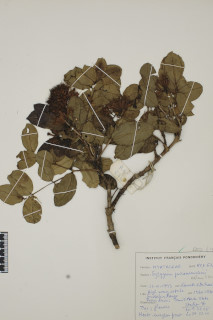
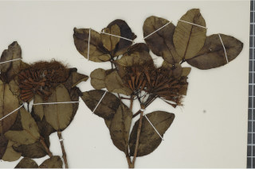
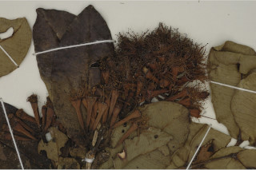
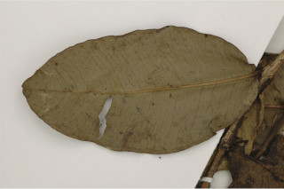
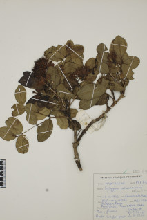
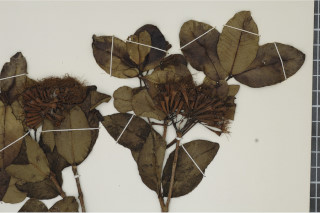
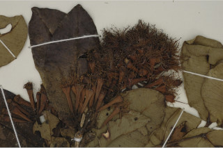
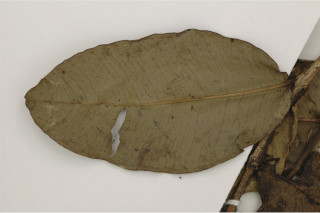

Images :
 








| Habit : | Trees up to 8 m tall. |
| Leaves : | Leaves simple , opposite , decussate ; petiole 0.2 cm long, glabrous ; lamina 2.8-5×1.8-2.7 cm, elliptic to ovate- elliptic , apex acute or obtuse , base rounded or obtuse , margin entire or revolute , coriaceous , glabrous , pellucid punctate ; midrib canaliculate above; secondary_nerves many, parallel , slender, with intramarginal nerve; tertiary_nerves admedially ramified to obscure . |
| Inflorescence / Flower : | Inflorescence dense terminal umbellate cymes ; flowers greenish white; calyx tube funnel shaped, ca. 1 cm long. |
| Fruit and Seed : | Berry , ca. 1.5 cm long, top shaped, crowned with persistent calyx ; seeds 1-2. |